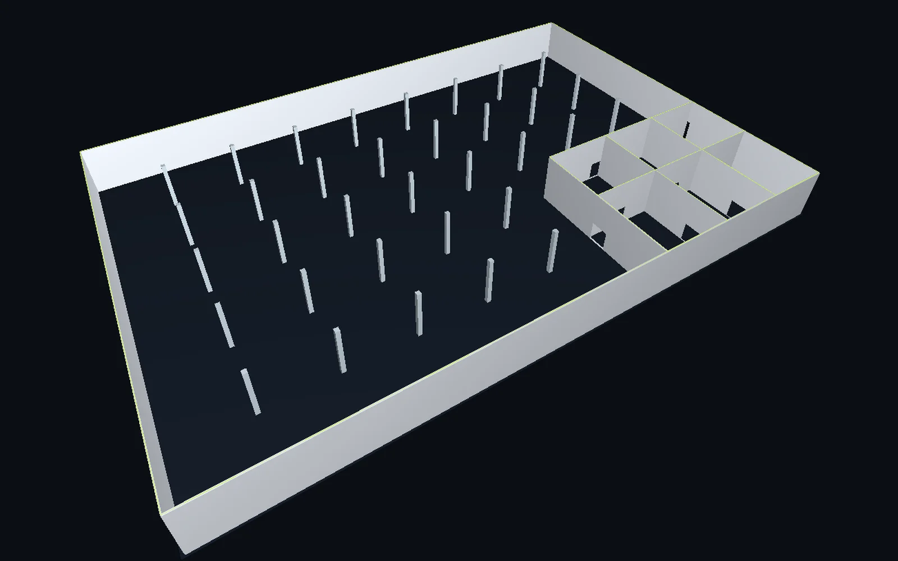
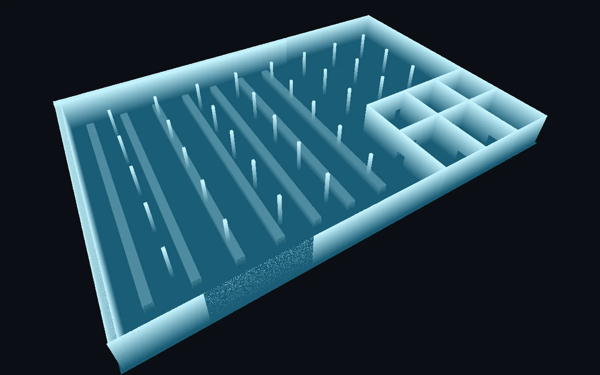

Arkkitehdit ja mallintajat
Lähtötilanteen malli valmiina saman päivän aikana. Aika menee suunnitteluun eikä pisteiden jäljittämiseen.
Laserkeilain mittaa rakennuksen miljooniksi pisteiksi. Ordinate muuttaa ne valmiiksi 3D-malliksi: seinät, ovet, ikkunat, pilarit ja huoneet. Mallin voi avata suoraan Revitissä tai ArchiCADissa. Ilman päiviä käsin piirtämistä.


Keilain näkee Ordinate mallintaaRakennuksen laserkeilaus hoituu päivässä. Sen jälkeen joku istuu koneen ääreen ja piirtää seinän kerrallaan miljoonien pisteiden päälle. Ja pisteissä on kaikki mitä tilassa sattui olemaan: hyllyt, putket, kalusteet, ihmiset.
Ordinate tekee sen jäljityksen puolestasi. Se erottaa rakenteen tavarasta, mittaa jokaisen seinän suoraan pisteistä ja kirjoittaa tuloksen malliksi, jonka kanssa arkkitehti voi heti jatkaa.
Sinun ei tarvitse ymmärtää pistepilvistä mitään. Vedät keilaukset ohjelmaan ja painat nappia.
Vedä keilaustiedostot ohjelman ikkunaan: yksi tiedosto tai koko kansio. Saman kohteen erilliset keilaukset yhdistetään automaattisesti.
Tekoäly erottaa rakenteet kalusteista ja tavarasta. Sen jälkeen seinät, laatat, pilarit, palkit, ovet ja ikkunat mitataan suoraan pisteistä. Ei arvata, ei piirretä silmämääräisesti.
Tuloksena on IFC-malli, joka avautuu Revitissä, ArchiCADissa ja Solibrissa. Malli on keilauksen oikeassa sijainnissa, joten se asettuu pistepilven päälle täsmälleen.
Jokainen osa on mallissa sitä mitä se on: seinä tietää paksuutensa, ovi tietää leveytensä, huone tietää pinta-alansa. Suunnittelija voi muokata niitä kuin mitä tahansa mallin osaa.
Lähtötilanteen malli valmiina saman päivän aikana. Aika menee suunnitteluun eikä pisteiden jäljittämiseen.
Toimita asiakkaalle pistepilven lisäksi malli, jonka kanssa hän voi oikeasti tehdä töitä, ilman että mallinnus syö katteen.
Olemassa olevasta rakennuksesta mitattu malli saneerausta, muutostöitä tai ylläpitoa varten. Nopeasti ja ilman arvailua vanhoista piirustuksista.
Emme lupaa täydellistä mallia. Lupaamme mallin, joka kertoo itse mihin se perustuu, ja missä se ei ole varma.
Testiaineistoilla löydetyt seinäpinnat asettuvat keilattuihin pisteisiin alle millimetrin tarkkuudella. Laaturaportti kertoo luvun jokaisesta mallista erikseen.
Julkisella rakennustyömaiden vertailuaineistolla, jossa jokainen piste on luokiteltu valmiiksi, Ordinaten löytämistä seinistä 92–98 % oli aitoja seiniä.
Jos seinän kohdalla ei ole kunnollista pintaa, se ei mene hiljaa läpi: se päätyy tarkistuslistalle. Ohjelma oppii myös sinun korjauksistasi, mikä juuri tässä rakennuksessa on seinä.
Ordinate on Windows-ohjelma, joka tekee kaiken laskennan paikallisesti. Pistepilviä tai malleja ei lähetetä mihinkään: ei pilveen eikä meille. Siksi sitä voi käyttää myös kohteissa, joiden aineisto on luottamuksellista.
Kokeile omalla keilauksellasi. Asennus vie minuutin, eikä se tarvitse pääkäyttäjäoikeuksia.